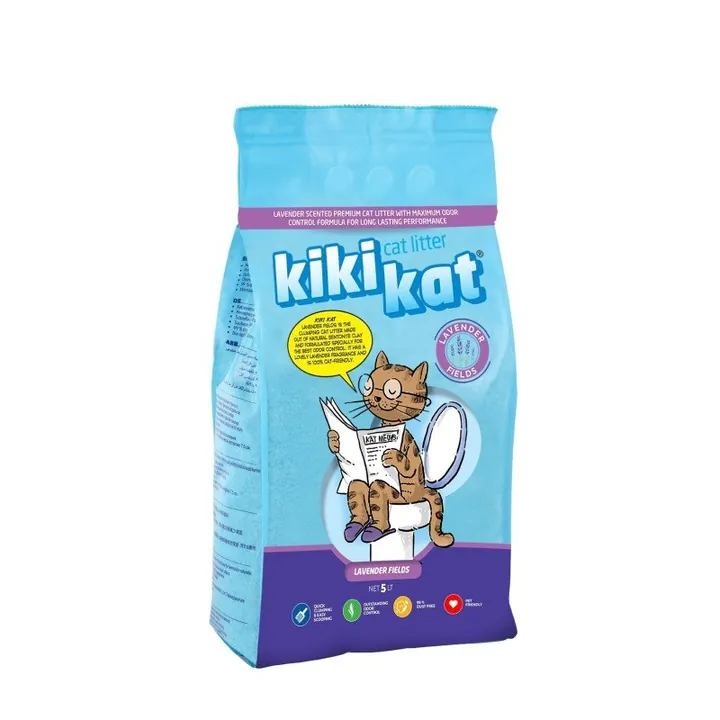
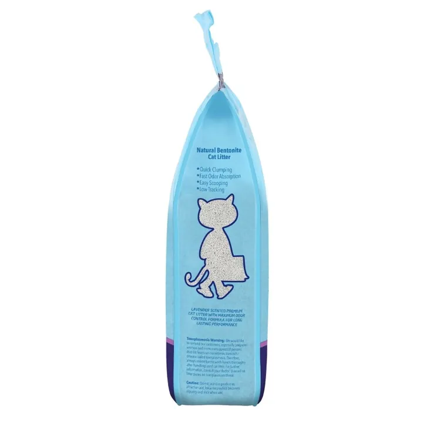
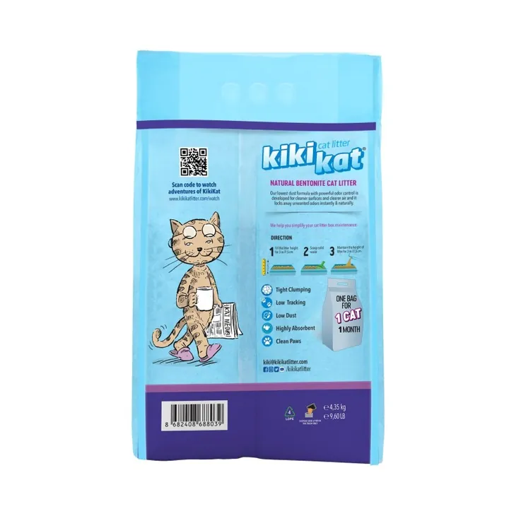
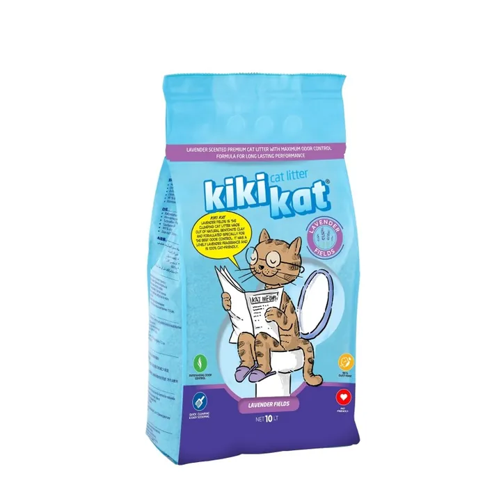

Kiki Kat Lavender Fields
Kiki Kat Lavender Fields je prémiové hrudkující stelivo z přírodního bílého bentonitu, vyvinuté pro co nejlepší pohlcení pachu a rychlé hrudkování. Příjemná levandulová vůně připomíná rozkvetlá levandulová pole a stelivo je 100% šetrné ke kočkám.
Pro milovníky jemné květinové vůně v bytě.
| Balení | Hmotnost | Vystačí |
|---|---|---|
| 5 l | 4,35 kg | 1 kočka asi na 1 měsíc |
| 10 l | 8,7 kg | dvojnásobek balení 5 l |
Hmotnost podle údajů na obalu, výdrž podle výrobce. Obal je v originálním provedení s českou etiketou.
Rychlé hrudkování, snadné vybírání
Stelivo rychle tvoří pevné hrudky, takže moč i výkaly z toalety snadno vyberete. Zbytek čistého steliva zůstane na místě.
Výborné pohlcení pachu
Jeden z nejjemnějších jílů a speciální výrobní postup váží nepříjemný pach okamžitě a přirozeně. Šetrné ke zdraví kočky.
Snadno se nosí i skladuje
Pevný uzavíratelný sáček 5 l se snadno přenáší a jedné kočce vystačí přibližně na měsíc.
Proč bentonit
Bentonit je jíl, který přirozeně tvoří hrudky. Stelivo z něj má jemná i hrubší zrna. Jemná zrna se rychle spojují a kočkám je taková struktura příjemná.
Díky přírodnímu a hygienickému složení patří bentonitové stelivo k nejoblíbenějším typům. Je vysoce savé: moč i výkaly rychle vysuší, takže se toaleta snadno čistí.
Péče o kočičí toaletu
- Používejte čistou toaletu.
- Hrudky vybírejte každý den.
- Pracujte v rukavicích.
- Použité stelivo nesplachujte do WC, patří do směsného odpadu.
Jak stelivo používat
Nasypte 7,5 cm
Do čisté toalety nasypte stelivo do výšky asi 7,5 cm.Vyberte hrudky
Pevné hrudky a výkaly vyberte lopatkou, ideálně každý den.Doplňte
Dosypte stelivo, aby vrstva zůstala na 7,5 cm.


Velkoobchod: dodáváme po paletách
Kiki Kat dovážíme přímo od výrobce z Turecka. Pro prodejny, chovatelské stanice, útulky i obce dodáme celé palety.
- všech 6 variant, balení 5 l a 10 l
- dodání po paletách v rámci ČR
- dovoz přímo od výrobce
Chcete nabídku?
Napište, kolik palet a jakých variant potřebujete a kam je dovézt. Ozveme se s cenou a termínem.